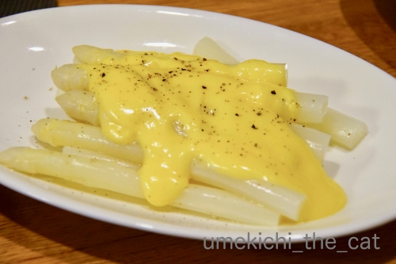
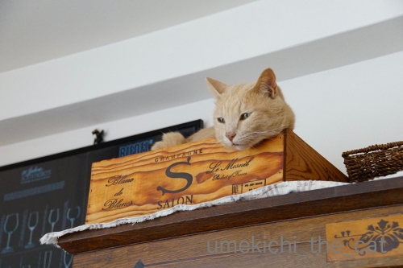

梅吉くんの、くんくんくんくん [梅吉]

いつもの場所で寝ていたのに

やおら立ち上がる！
（13秒です＾＾）
パン好きの梅吉、真顔でくんくんです(*>艸<)
で、梅吉がくんくんしていたのは

パンが角食ですがエッグベネディクトー！
すごいでしょ、頑張りましたよ＾＾
オランディーヌソースは前夜にホワイトアスパラを食べた時の残り物。
ホワイトアスパラ、関西ではなかなか手に入らないので買える時は大人買いしてますw
今年は二回に分けて食べました。
1回目はオリーブオイルをまぶして塩胡椒をしてグリル焼き。
グリーンのアスパラもそうですがこれが一番美味しいアスパラの食べ方だと思ってます。
栄養素も茹でる時よりも余すところなく摂取できる？
2回目はホワイトアスパラの食べ方の王道、柔らかく茹でてオランディーヌソースをかけました。
頑張ってソースを作ったので画像も載せて自慢しちゃおうw

ソースをちょっと煮詰め過ぎてしまって・・・
もう少しゆるっとアスパラにまとわせたかった。
でも味はサイコーに美味しかったです＾＾

〜補足〜
私が一人で食事をしている時は「ください、ください」がすごいのですが
（でもあげませんよw）
二人で食事をしていると黙って見ている梅吉です。
食事の時は食卓テーブルにも上がってきません。
食器を下げ始めると速攻で上がってきますけど(⌒-⌒;
『食べている時は絶対ダメ。』
やりたい放題の梅吉ですが一緒に暮らしていく上で
これだけは必要かなと覚えてもらいましたよ＾＾
先週末のお話ですが近所の植物園へ。
まだ梅雨入り前だったので空が青いです。
(この写真は雲が多いですが・・・汗、汗）
下の方から伸びてきているお花はヒシバデイゴ。

植物園にあったデイゴ２種です。
左がヒシバデイゴ、右がアメリカデイゴ。
赤い花の形が全然違いますよね＾＾
デイゴと共に見頃だったのがジャカランダ。背景に見えている紫の花。
これがまた美してくてうっとりでした。
美しい紫は散った後もフォトジェニックでしたよ。
デイゴとジャカランダとパームツリーと。
ちょっとした旅気分の景色でした。
実はこの日は紫陽花を見にきたのですが・・・
紫陽花の区画にきたところでわたくしの専属カメラマンがバッテリー切れ＞＜
紫陽花の姿の良い写真はこれだけ。
でも目ではちゃんと堪能してきましたよ（^_－)☆
2019-07-01 00:00
nice!(79)
コメント(25)

カフェオレ色の梅吉

梅吉 2023年8月10日 永眠


梅吉と出会った譲渡会

犬猫の理由なき殺処分ゼロ
妄想広告
UMEKICHI 光

爆発的に早い！
時々攻撃的！
Thanks to Mr.Boss365
爆発的に早い！
時々攻撃的！
Thanks to Mr.Boss365

梅吉さんの真剣なクンクン! 美味しそうな匂いがするのでしょうねー。
美しいお花の写真の数々も楽しませていただきました。専属カメラマン様に感謝です。
by zombiekong (2019-07-01 01:15)
これは梅吉くんでなくても寝ていたら飛び起きるヤツ！
by yamatonosuke (2019-07-01 02:10)
ニオイだけで満足なのかな？
ソックス君は足元までやって来ます＾＾
by ぽちの輔 (2019-07-01 06:46)
オランディーヌソース、めちゃくちゃ美味しそう♪( ´▽｀)
梅吉さん、クンクンしても側まで来ての
おねだりはしないんですねぇ(⌒-⌒; )
by ニッキー (2019-07-01 07:33)
あ、この植物園ですね。いつもおっしゃってるやつ。
いろいろありそうですねー。
梅吉さん、くんくん、鼻をのばーーしてますね。
何がお好みなのかな。
私は今日は久しぶりにつれない生ネコと遊んでますー。
もうちょっとしかいないけど。
by ChatBleu (2019-07-01 08:29)
梅吉君の13秒に負けないくらい私もクンクンタイム 15秒！エッグベネディクトーもホワイトアスパラも あ〜たまりませんね(^^)
by チャー (2019-07-01 09:36)
梅吉さん、パンの匂いにクンクンですね！
パンが大好きなのですね(^^)
by ma2ma2 (2019-07-01 09:42)
お鼻ヒクヒク♪ 可愛過ぎ～です(#^.^#)
あぁ～おしゃれな食事♪
私も近くにいたら一緒に
お鼻クンクンしそうです（笑
by きぃ (2019-07-01 11:08)
こんにちは。
梅吉君！！いい動きしています！！
梅吉君は余り嗅覚に敏感に反応しないタイプ？と思っていましたが・・・
興味あるものにはすこぶる敏感ですね。閉じた口元がキュートです！！（笑）
「エッグベネディクトー」お洒落ですね！！
茹でたアスパラ？量が半端ではない感じ？高価なアスパラの大人喰いですね（笑）
小生猫も食事前にきますが、食事中は無反応です。
人間が食べているモノには興味がない感じです。
躾？うまくいってますね。梅吉君も良い子です！？(=^･ｪ･^=)
by Boss365 (2019-07-01 12:09)
クンクン、お鼻ひくひくのお顔が大好きです(#^^#)
ウチのも私一人だとテーブルに上がってくることがあります。
向かいに寝そべって食べる様子をじ～っと見てます^^;
子猫の頃からキャットフードしか食べさせていないので、箸置きとか、割りばしとか、興味はそっちにあるようです。
相方がいると絶対に上がってこないので、一対一だと勝てる！と思っているフシはありますね^^
専属カメラマンさん、これからというところでバッテリー切れ(≧▽≦)
我が家の猫カメラマンも、昔々交換用のバッテリーをコインロッカーに置いたまま、というのがありました！！
by ゆきち (2019-07-01 12:58)
うおーーー！美味しそうだ！！
アスパラアスパラアスパラ〜〜〜♪♪
今年は北海道からお取り寄せしなかったので
ちょっと飢えてます(笑)
オランディーヌソースすごいね、がんばったんだね！
わたしなんて作ったことないよ(笑)
食事の時にテーブルにあがってこないのは偉い^^
うちなんて食事してるすぐ隣であおがひっくり返ってるからなあ、
尻尾が味噌汁のおわんに入りそうになるよ^^;
by リュカ (2019-07-01 15:47)
梅吉さん、くんくん可愛い～～～お鼻が動いてる！＾＾
美味しい匂いに反応してたのね。
エッグベネディクト好きです～自分の家で作るなんて！
オンディーヌソース？すごい！
ホワイトアスパラ煮たこともないような気がする‥缶詰だけです＾＾；
デイゴとジャカランダ、素敵。
旅行してきたみたいですね～＾＾
by sana (2019-07-01 19:05)
くんくん可愛いですねえ♡
おんでぃーぬそーす？！ そりゃ私もくんくんしちゃいます。
ホワイトアスパラ、どっさり。ぜいたくですねー。
こないだお店で１本を四人で分けて食べました(^◇^;)
by liang (2019-07-01 20:09)
くんくん可愛い～(*´ω｀*)
エッグベネディクト美味しそう。そらくんくんしたくなるわ～(≧▽≦)
by palpal (2019-07-01 20:22)
梅吉さんのクンクン、
張り子の置物の様で可愛いです（笑）
美味しい匂いが分かるとはお目が高い！（笑）
ちぃさんのエッグベネディクト、
オランディーヌソースが美味しそうです。
梅吉さん、約束が守れる男子なのですね。
by kiki (2019-07-01 21:09)
エッグベネディクト美味しそう。
こりゃクンクンしちゃいますよね～、梅吉さん。^^)
by yes_hama (2019-07-01 21:18)
ものすごくクンクンしてますね
作りたてのエッグベネディクト、美味しそうです
梅吉君と一緒にくんくんしてしまいそう（＾＾）
by 藤並 香衣 (2019-07-01 23:10)
良いなぁ〜ホワイトアスパラ
俺も ちぃさんちの子になりたい
by (。・_・。)２ｋ (2019-07-01 23:22)
エッグ・ベネディクト、色も綺麗でほんとに美味し
そうですね。くんくんしたくなります(@^▽^@)。
私も「グランドハイアット東京の朝食」という本を
見てイングリッシュマフィンまで取り寄せて作りま
したが、面倒すぎて1度で終わりました。朝食に誰
か作ってくれないかなあ。梅吉さん、お利口さん！
by うりくま (2019-07-01 23:23)
この匂いで飯３杯は喰えるニャ？（ﾟ□ﾟ）
by 英ちゃん (2019-07-01 23:41)
梅吉さんのクンクン動画楽しい（^^
うちもNaotyanngaにんにくのにおいをかぎ分けるとき、こんなお顔します(笑
デイゴ～の花が咲♪くって歌「島唄」のデイゴってこんなお花だったのですね～
知らなかった～ありがとう。南の島の花なのかしら。
自慢じゃないけどまだエッグベネディクト食べたことありませぬ。
自分でオランディーヌソース作るってすごいぞ！リスペクト決定だ。
by marimo (2019-07-02 16:43)
にゃるほど！梅吉さん、くださいは1人の時のみ了解しました^^
by ニコニコファイト (2019-07-03 06:53)
お花、みんな素敵に撮れてますねっ♪
by yuppie (2019-07-03 13:37)
皆様、お返事ごめんなさいですm(_ _)m
by ちぃ (2019-07-04 15:30)
エッグベネディクトじゃないですかっ♪
ソースまで手作りされてすばらしいっ(ﾟｰ,ﾟ*)ｼﾞｭﾙﾙﾙ
オサレですね～(≧∀≦)
ホワイトアスパラはなかなか手に入らないですよね＾＾
なので、あまり食した記憶が(￣▽￣;)アハハ…
梅ちゃんはちゃんと言いつけを守るよいコですね❤
うちは叱ると逆ギレするタイプでして...
初期教育の失敗でございます(笑)
by カトリーヌ (2019-07-05 14:09)